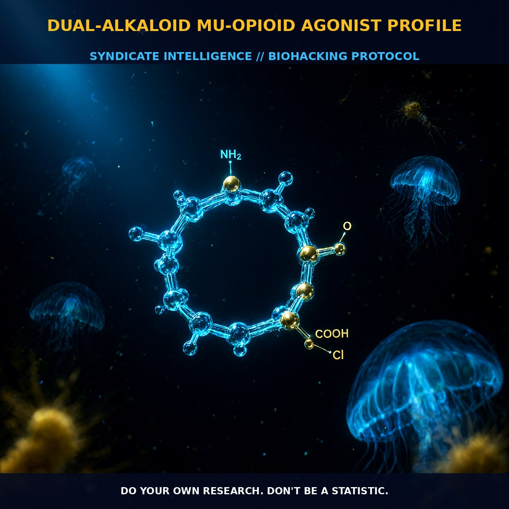

Dual-Alkaloid Mu-Opioid Agonist Dynamics in Mitragyna Speciosa

1. The Pharmacological Architecture
The bio-active profile of Mitragyna speciosa is defined by the sophisticated interplay between two primary indole alkaloids: mitragynine and 7-hydroxymitragynine. Mitragynine, which constitutes approximately sixty-six percent of the total alkaloid load, serves as a G-protein biased mu-opioid agonist. This specific molecular bias is critical; it facilitates receptor activation while significantly mitigating the risk of respiratory depression—a common adverse effect of traditional full opioid agonists such as morphine. By binding effectively to mu-opioid receptors without imposing a heavy sedative load, mitragynine acts as the primary driver for the stimulant effects observed at lower dosing thresholds.
Conversely, 7-hydroxymitragynine operates as a high-affinity analgesic agent. Although present in raw leaf material in trace amounts of less than two percent, its potency ranges from thirteen to forty-six times greater than that of morphine. This exceptional efficacy is derived from its superior binding affinity for both supraspinal and spinal mu-opioid receptors. While mitragynine establishes the structural foundation for adrenergic activity, 7-hydroxymitragynine drives the antinociceptive response. This dual-action mechanism creates a compound profile where one alkaloid manages the stimulant ceiling and the other modulates the analgesic floor, enabling precise tuning of the psychoactive state.
2. Biological Leverage and State Modulation
The physiological outcome is determined by the dynamic balance between these two alkaloids, effectively toggling the system between a focus mode and a recovery mode. At lower dosing thresholds, mitragynine functions as an adrenergic agonist while simultaneously engaging mu-opioid pathways. This dual signaling results in increased physical energy and cognitive focus without the jitters often associated with pure stimulants. The G-protein bias ensures that the cAMP signaling pathway is modulated effectively, supporting sustained alertness while maintaining cellular homeostasis.
As the dosage increases, the contribution of 7-hydroxymitragynine becomes more pronounced, shifting the physiological state toward sedation and pain relief through potent receptor occupancy. High levels of mitragynine relative to 7-hydroxymitragynine sustain the adrenergic drive, promoting wakefulness and cognitive clarity. In contrast, an elevated ratio of 7-hydroxymitragynine amplifies mu-opioid activation, leading to deeper analgesia and a calming effect on the nervous system. This leverage point allows users to manipulate their physiological state by adjusting input doses or selecting specific alkaloid profiles, effectively toggling between sympathetic activation and opioid-mediated relaxation without crossing into heavy sedation.
3. Tactical Implementation
Practical application requires distinguishing between the primary states driven by alkaloid dominance. For a focus-oriented protocol, a daily intake of one to two grams of white or green vein material leverages high mitragynine content to support adrenergic tone and mental clarity. This range stays well below the tolerance ceiling, minimizing the risk of vestibular disruption known as 'the wobbles.' Users should monitor their response carefully, as individual metabolic rates can influence how quickly the G-protein biased effects transition into more pronounced analgesic activity.
For recovery protocols, particularly those requiring deeper pain management or relaxation, the dose should escalate to four to six grams, emphasizing red vein varieties rich in 7-hydroxymitragynine. This higher input ensures sufficient concentration of the potent analgesic to trigger mu-receptor mediated antinociception effectively. It is critical not to exceed fifteen grams within a twenty-four hour period to avoid destabilizing the vestibular system and causing motor coordination issues. Those using semi-synthetic extracts must exercise caution, as these products often contain concentrated levels of 7-hydroxymitragynine that can accelerate physical dependence if used chronically without cycling.
Prostar Life Hack: The Venation Toggling Strategy
Do not treat all strains equally. To hack your neurochemistry, use White/Green Vein (1-2g) in the morning to drive adrenergic focus and Red Vein (4-6g) in the evening to leverage 7-hydroxymitragynine for rapid recovery. This cycling strategy minimizes tolerance buildup while maximizing the distinct benefits of each alkaloid’s unique receptor affinity profile.
Prostar Life Hack
Prostar Life Hack: The Venation Toggling Strategy
Do not treat all strains equally. To hack your neurochemistry, use White/Green Vein (1-2g) in the morning to drive adrenergic focus and Red Vein (4-6g) in the evening to leverage 7-hydroxymitragynine for rapid recovery. This cycling strategy minimizes tolerance buildup while maximizing the distinct benefits of each alkaloid’s unique receptor affinity profile.
[ AUTHOR: LEAD TECHNICAL RESEARCHER ]